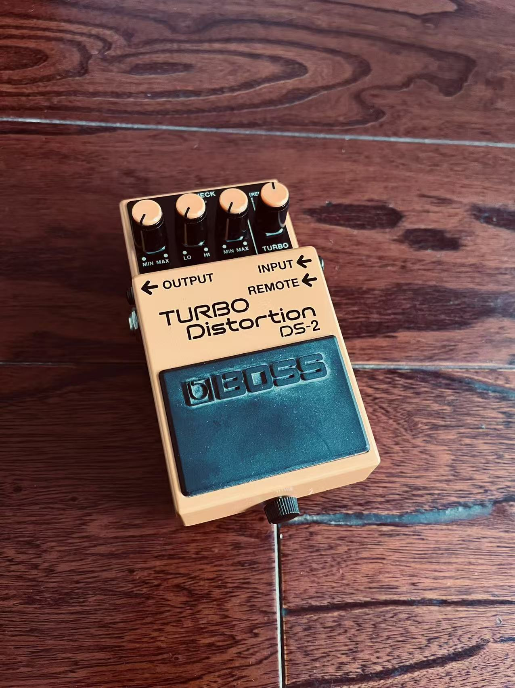

概述
参考视频：bilibili搜索：【OYL】宮澤茉凜MARIN的效果器板上有些什麽？
Delay Tc Electronic Flashback
支持 11 种 delay 效果；40s looper
Booster EP Booster
常见于进入solo提升音量和升压
小综合 MS-50G
带有箱模能力的小型综合效果器
Distortion1 BOSS Adaptive Distortion
BOSS 系列的 失真效果器
Distortion2 Suhr Riot
Suhr系列的 失真效果器
Tuner Polytuner 2 mini
调音表
Baby Perfect Volumn Shin’s Music *
Shin’s Music 音量踏板
About Me: Leon’s Blog